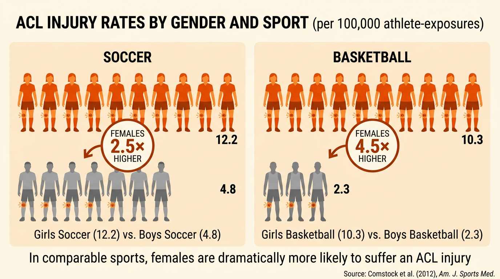

What Are Intrinsic Factors?
An intrinsic factor is a factor from inside the body that influences the risk of injury. Unlike extrinsic factors (which come from the environment around you), intrinsic factors are personal to the performer.
Intrinsic factors fall into four areas: individual variables (age, gender, fitness, experience), physical preparation (warm-up, nutrition, hydration), psychological factors (motivation, arousal, anxiety, confidence, aggression) and mental strategies (mental rehearsal, imagery, selective attention).
Individual Variables
An individual variable is a personal characteristic that affects how likely a performer is to get injured. These variables differ from person to person and can change over time.
- Gender — men and women have different body compositions, flexibility levels and injury patterns. For example, women are more prone to ACL injuries due to wider hips altering knee alignment.
- Age — younger performers have growing bones and vulnerable growth plates that can be damaged. Older performers lose flexibility and bone density, increasing fracture risk.
- Experience — experienced performers have better technique and body awareness, making them less likely to perform skills incorrectly.
- Weight — performers need to be a suitable weight for their activity. An underweight rugby player is more vulnerable in tackles, while some sports such as boxing and judo have weight categories to reduce this risk.
- Fitness levels — lack of fitness is a major cause of injury. When a performer is fatigued, muscles cannot support the body properly. A lack of flexibility also increases the risk of muscle and ligament tears.
- Technique and ability — poor technique directly increases injury risk. A bad landing in gymnastics or an incorrect tackle in rugby can cause serious harm.
- Nutrition and hydration — exercise requires energy from food. Dehydration causes fatigue and affects concentration. A lack of key nutrients leads to weaker bones and muscles.
- Medical conditions — pre-existing conditions such as asthma, diabetes or heart conditions make performers more prone to injury or illness during activity.
- Sleep — lack of sleep reduces concentration, reaction time and recovery. A tired performer is more likely to make mistakes and pick up injuries.
- Previous or recurring injuries — scar tissue is weaker than the original tissue, so a previous injury increases the risk of re-injury in the same area.
Many individual variables affect each other. Poor sleep reduces technique. Poor nutrition affects weight. Age affects experience. When answering exam questions, showing these links between factors demonstrates deeper understanding.
Gender: Males typically have greater muscle mass and bone density, while females tend to have greater flexibility. These differences affect which injuries are most common — for example, stress fractures are more common in female distance runners.
Age: Children’s bones are still growing. The growth plates at the ends of bones are softer and more easily damaged. In older adults, conditions like osteoporosis (weakening of bones) significantly increase fracture risk. Flexibility also decreases with age, making strains more likely.
Fitness and flexibility: A performer who lacks cardiovascular fitness will tire more quickly. Fatigue leads to poor technique, slower reactions and less control — all of which increase injury risk. Similarly, tight muscles and limited range of motion make tears far more likely during sudden or explosive movements.
Previous injuries: Returning to sport too soon after an injury is one of the biggest risk factors. The damaged tissue has not fully healed, scar tissue is less elastic than healthy tissue, and the performer may unconsciously alter their movement patterns to protect the injured area, which can cause new problems elsewhere.

Psychological Factors
A psychological factor is a mental or emotional factor that affects how a performer behaves during sport. These factors can either increase or decrease injury risk depending on how they are managed.
- Motivation — over-motivated performers may push too hard and take unnecessary risks. Under-motivated performers may skip warm-ups or fail to concentrate fully.
- Arousal — the level of physical and mental alertness. Optimal arousal improves performance, but too much leads to anxiety, tension and poor decision-making.
- Anxiety and stress — cause muscle tension, reduce concentration and lead to mistakes that increase injury risk.
- Confidence — over-confidence leads to unnecessary risks (attempting skills beyond ability). Under-confidence causes hesitation and poor technique.
- Aggression — there are two types. Direct aggression is intentional physical contact aimed at harming an opponent (e.g. punching in football). Channelled aggression is effort directed at the activity within the rules (e.g. a powerful but legal tackle in rugby).
Direct aggression involves deliberate intent to harm an opponent and is against the rules. Examples include a boxer hitting below the belt, a footballer punching an opponent, or a rugby player stamping on a player on the ground. This type of aggression leads to fouls, cards and bans — and often injures both the victim and the aggressor.
Channelled aggression is positive. The performer channels intensity and effort into the activity itself, within the rules. A sprinter using aggression to explode off the blocks, a rugby player making a powerful legal tackle, or a tennis player hitting a serve with maximum force are all examples. This type of aggression can improve performance without increasing the risk of injury to others.
Reasons for Aggression
Aggression in sport does not appear out of nowhere. Several factors can trigger aggressive behaviour:
- Level of performance — frustration at poor personal performance can boil over into aggression.
- Retaliation — responding to a perceived foul or unfair play by an opponent.
- Pressure to win — from coaches, teammates, spectators or personal expectations.
- Decisions of officials — disagreement with a referee’s call can trigger frustration and aggressive reactions.
- Performance-enhancing drugs — some substances (particularly anabolic steroids) increase aggression as a side effect.
Mental Strategies
Performers can use mental strategies to manage psychological factors and reduce injury risk. These techniques help maintain focus, control anxiety and improve decision-making.
- Mental rehearsal — visualising performing a skill successfully before doing it. The performer pictures every step of the movement in their mind. For example, Owen Farrell has a well-known routine before every free kick where he mentally rehearses the kicking action.
- Imagery — creating mental images to relax and focus. A gymnast might imagine a perfect routine on the beam. This reduces anxiety and builds confidence.
- Selective attention — focusing on the information that matters and blocking out distractions. A penalty taker ignoring the crowd noise and focusing only on where to place the ball is using selective attention.
Mental strategies help performers control their arousal levels, reduce anxiety and maintain concentration. By staying mentally prepared, performers make fewer mistakes and reduce the risk of injury caused by poor decision-making or loss of focus.